telescope.svg
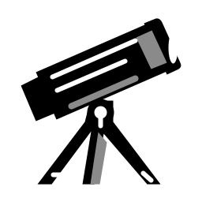
40 px56 px
120 px
Teleskop
Tabung diagonal besar dan tripod terbuka
1,351 byte10 kolom × 5 objek. Setiap kartu memperlihatkan SVG asli pada 40, 56, dan 120 px. Geser mendatar untuk membandingkan lima simbol pada layar HP. Ukuran ditampilkan pada zoom browser 100%.

40 pxTeleskop
Tabung diagonal besar dan tripod terbuka
1,351 byteMesin tik
Kertas tegak dan keyboard bertingkat
2,167 byte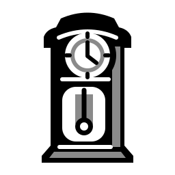
40 pxJam lemari
Kotak tinggi bermahkota dan jendela bandul
1,375 byteGramofon
Corong lebar miring dan piringan di atas kabinet
1,623 byte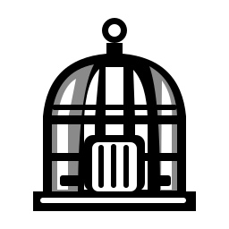
40 pxSangkar
Kubah berjeruji dan cincin gantung tanpa burung
1,444 byte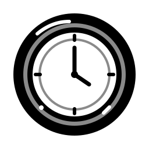
40 pxJam dinding
Lingkaran polos tanpa gantungan atau rumah
1,129 byte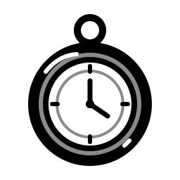
40 pxJam saku
Cincin gantung dan knop di atas lingkaran
1,427 byte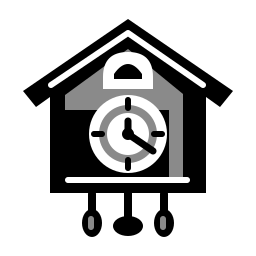
40 pxJam kukuk
Atap pelana, bukaan kukuk kosong, bandul di bawah
1,697 byte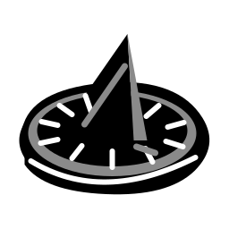
40 pxJam matahari
Pelat elips miring dan sirip segitiga tegak
1,177 byte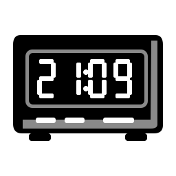
40 pxJam digital
Kotak mendatar dengan empat angka segmen
2,112 byte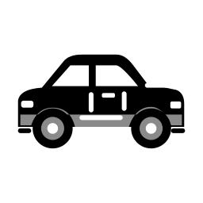
40 pxSedan
Bagasi bertingkat terpisah dari kaca belakang
1,510 byte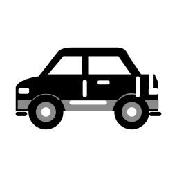
40 pxHatchback
Atap pendek dan buritan dipotong tegak
1,490 byte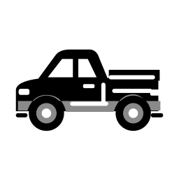
40 pxMobil bak
Kabin pendek dengan bak terbuka panjang
1,636 byte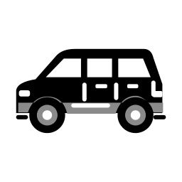
40 pxStation wagon
Atap panjang sampai ekor dengan tiga jendela
1,456 byte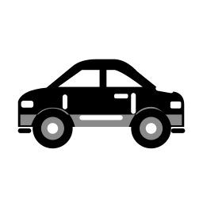
40 pxKupe
Atap rendah melandai dan satu pintu panjang
1,519 byte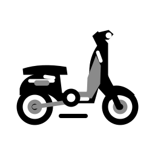
40 pxSkuter
Tameng depan lebar dan dek pijakan rendah
1,885 byte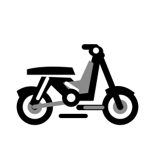
40 pxMotor bebek
Rangka turun terbuka dengan jok panjang
2,122 byte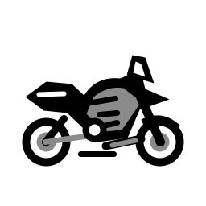
40 pxMotor sport
Fairing runcing penuh dan ekor terangkat
2,101 byte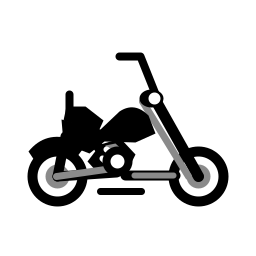
40 pxMotor gede
Garpu depan memanjang dan stang tinggi
2,418 byte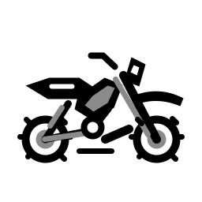
40 pxMotor trail
Spakbor tinggi dan ban berpola kasar
2,564 byte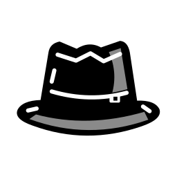
40 pxTopi fedora
Puncak berlekuk dan sisi brim terangkat
1,221 byte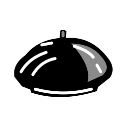
40 pxBaret
Kubah miring lembut dengan tangkai pendek
1,069 byte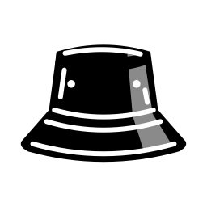
40 pxTopi bucket
Mahkota datar dan brim menurun tajam
1,183 byte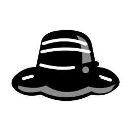
40 pxTopi pantai
Brim lebar bergelombang dan pita simpul
1,084 byte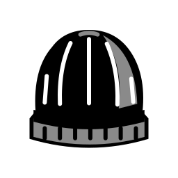
40 pxKupluk
Kubah rajut tinggi dengan manset lebar
1,646 byte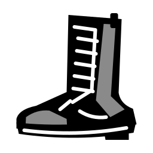
40 pxBot
Poros semata betis dengan tali dan hak blok
1,198 byte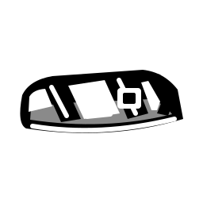
40 pxSandal
Sol terbuka dengan dua tali melintang
1,344 byte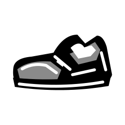
40 pxSepatu pantofel
Mulut sepatu rendah, apron dan sabuk penny
1,152 byte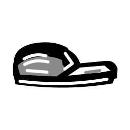
40 pxSelop
Ujung tertutup dengan tumit terbuka datar
1,147 byte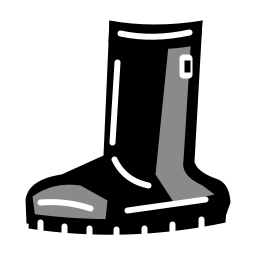
40 pxSepatu bot hujan
Poros tinggi lurus tanpa tali dan sol bergerigi
1,218 byte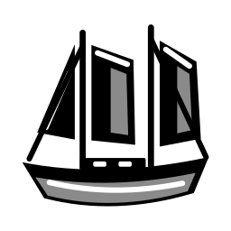
40 pxSekunar
Dua tiang dengan layar gaff memanjang
1,277 byte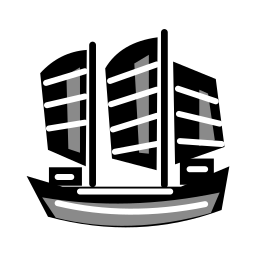
40 pxJung
Layar kipas berusuk horizontal
1,373 byte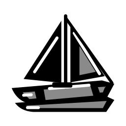
40 pxKatamaran
Dua lambung sejajar di bawah satu geladak
1,228 byte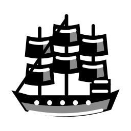
40 pxGaliung
Tiga tiang layar persegi dan buritan bertingkat
2,707 byte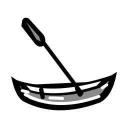
40 pxKano
Lambung terbuka rendah berujung naik dan dayung
1,288 bytePanci gagang
Badan dalam dengan satu gagang panjang
886 byteKuali
Mangkuk bulat dalam dengan dua telinga loop
970 byte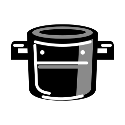
40 pxDandang
Badan tinggi silindris dan dua gagang pendek
1,142 byteWajan besi
Badan dangkal, bibir tuang dan gagang panjang berlubang
973 bytePanci tutup
Badan gemuk bertutup kubah dan knop atas
1,144 byte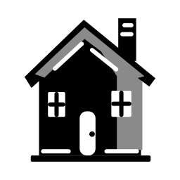
40 pxPondok
Atap curam tidak simetris dan cerobong batu
1,271 byte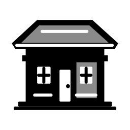
40 pxBungalo
Atap rendah menyebar dan teras dua tiang
1,379 byte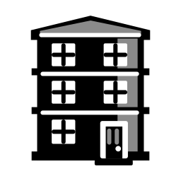
40 pxRumah deret
Fasad tinggi tiga lantai dan dinding samping rapat
2,032 byte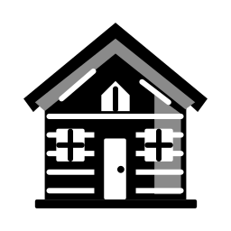
40 pxKabin kayu
Atap pelana sederhana dan dinding gelondongan horizontal
1,918 byte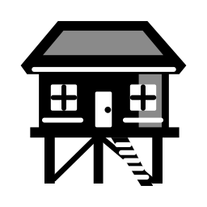
40 pxRumah panggung
Rumah terangkat dengan tiang dan tangga
1,670 byte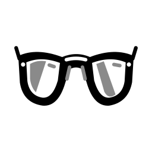
40 pxKacamata pilot
Lensa tetes air dengan jembatan ganda
1,252 byte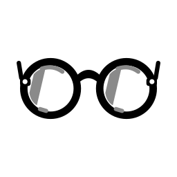
40 pxKacamata bulat
Dua lingkaran penuh dengan jembatan melengkung
1,276 byte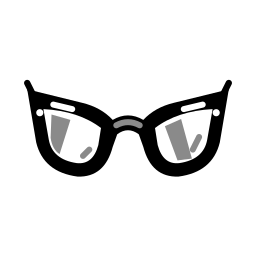
40 pxKacamata runcing
Sudut luar lensa terangkat tajam
1,267 byte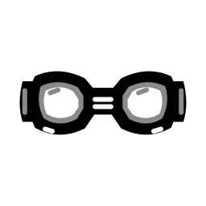
40 pxKacamata renang
Bantalan oval tebal dan tali lebar di sisi
1,284 byte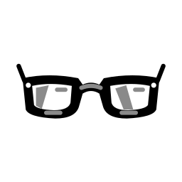
40 pxKacamata baca
Bingkai persegi panjang rendah dengan sudut tumpul
1,241 byte